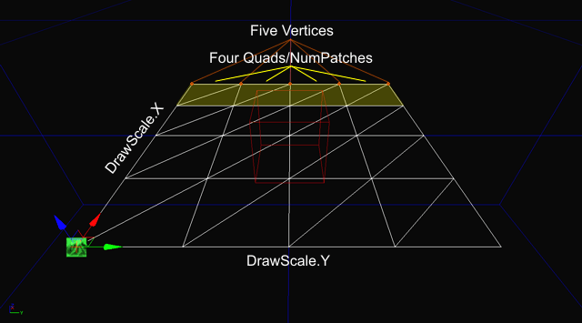
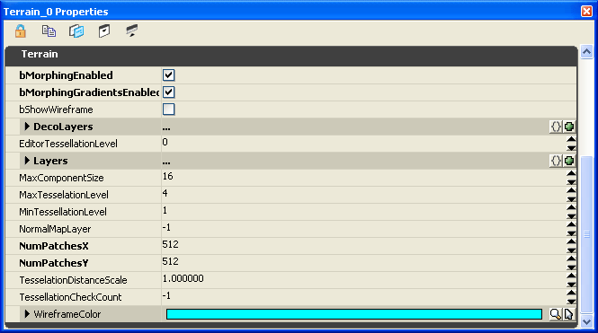
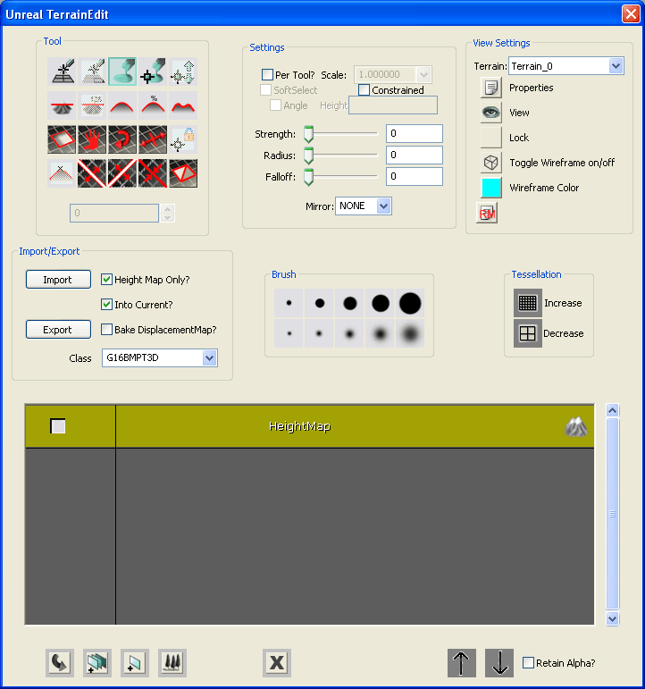
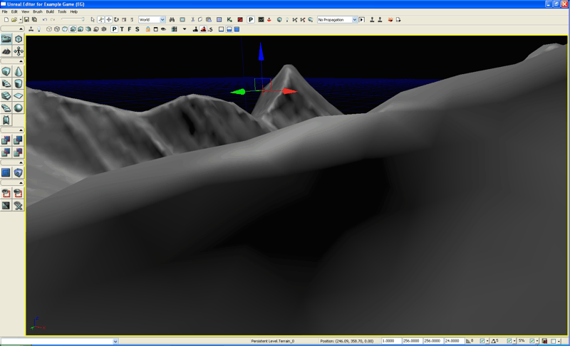

UDN
Search public documentation:
TerrainHeightmapsJP
English Translation
中国翻译
한국어
Interested in the Unreal Engine?
Visit the Unreal Technology site.
Looking for jobs and company info?
Check out the Epic games site.
Questions about support via UDN?
Contact the UDN Staff
中国翻译
한국어
Interested in the Unreal Engine?
Visit the Unreal Technology site.
Looking for jobs and company info?
Check out the Epic games site.
Questions about support via UDN?
Contact the UDN Staff
テレイン ハイトマップ: 外部で作成したテレイン ハイトマップの使用について
ドキュメントの概要: ハイトマップの作成およびインポート方法。 ドキュメントの変更ログ: 原書、 David Green? 。テレインの概要
Unreal Engine 3 では、テレインメッシュに直接手描きで丘や谷を作り込む方法、外部で作成したハイトマップ ファイルを UnrealEd (Unreal エディタ) で G16 ビットマップまたは T3D メッシュ形式としてインポートする方法の 2 通りのテレイン設計テクニックをサポートしています。 UE3 のテレイン オブジェクトは、X.Y の一定間隔を持つ標準の 3D 平面メッシュ グリッドで、この定数値は Display.DrawScale と Display.DrawScale3D.X/.Y プロパティで指定されます。テレインは X.Y の一定間隔として定義されるため、同一平面上の面の結合によるメッシュの三角形数の最適化をサポートせず、したがって、128x128 のテレインには常にそれを構成する 129x129 のハイトマップ配列が存在します。また、この一定間隔とは、洞窟やがけの張り出しなどの地形をテレイン オブジェクトによって直接作成できないことを意味し、これらは追加メッシュ オブジェクトとしてシーンに配置しなければなりません。さらに、2 つの頂点の間の指定相対高度に対して作成可能な最大傾斜角も、この X.Y の一定間隔により決まります。グリッド間隔 (DrawScale) の値が小さいほど、作成可能な傾斜の勾配が大きくなります。崖のような傾斜では、超高密度のテレインを使用せず、静的メッシュを使用することをお勧めします。 各テレイン グリッドの頂点の Z 座標値を 16 ビット範囲内に (0 ～ 65535) 設定して、相対高度を指定することができます。通常は、Unreal エディタでテレイン メッシュをペイントしたり、テレイン メッシュの頂点に対応する高度値を含むハイトマップ ファイルをインポートすることでこれらの値が変化します。 テレインシステムでは、動的 LOD テッセレーションを使用した レンダリング最適化をオプションとして組み込み、離れた位置でレンダリングされる三角形の数を削減することができます。カメラからの指定距離でテレインクワッドを結合し、レンダリングされる三角形の数を減らします。
ハイトマップの概要
テレイン ハイトマップとは、テレインメッシュ内の各点の高度 (altitude) 値の x*y 配列です。ビデオゲームのデザイン用としては四角のグリッドが最も一般的なハイトマップレイアウトで、そのサイズは通常 2 のべき乗 +1 (129x129 または 257x257) です。ハイトマップ 配列の各値は、最終テレイン メッシュ オブジェクトの頂点の Z 値 (高度) に直接対応します。 ハイトマップを可視化するには、濃いグレーのピクセルが低高度、薄いグレーが高高度を表すグレースケール ビットマップの使用をお勧めします。テレイン ハイトマップで最もよく使用される値の範囲は16 ビットで、0 から 65535 の高度範囲に対応します。標準のペイントソフトウェアや標準ビデオアダプタ、CRT/LCD のコンピュータ ディスプレイでは、16 ビットではなく 8 ビットのグレースケールしか表示できないので、ハイトマップの作成および編集用ソフトウェアが特別に設計されています。
ハイトマップの作成
ハイトマップはさまざまな調達または作成方法がありますが、最もよく使われるのは Digital Elevation Models (DEMs)? (DEM、デジタル標高モデル) で、これは飛行機、衛星または宇宙探査機により収集された実際の惑星の地勢のデータファイルです。さらに、コンピュータ生成の "アルゴリズム手法"によるハイトマップも頻繁に使用されます。これらのマップは、HMES、Leveller、Terragen、World Machine などを始めとする多数のソフトウェア アプリケーションで作成されています。DEMSからのハイトマップの作成についての詳しい情報は こちらのページ? をご覧ください。 アルゴリズム生成のハイトマップを UnrealEd 用に変換する場合に最もよく使用されるファイル形式は Raw 16 ビットで、前述のアプリケーションを含むほとんどのハイトマップ ソフトウェア アプリケーションでサポートされています。Raw-16 はヘッダーなしの単純なバイナリファイル形式で、高度の 16 ビット Raw データを x*y のストリームとして格納します。Unreal エディタ の Native (ネイティブ) ハイトマップの形式は G16 と呼ばれ、ハイトマップ ソフトウェアが G16 をネイティブでサポートしない場合は Raw-16 からの中間変換が必要です。G16 への変換ツールは、G16Ed や HMCS などいくつか存在します。 アルゴリズム生成のハイトマップ ソフトウェア アプリケーションでは、例えば Perlin のように何種類ものノイズアルゴリズムを組み合わせて、丘や谷の基礎となるハイトマップのレイアウトを生成するのが一般的です。オプションとして、風化、浸食、, 氷河作用などの地表アルゴリズムを使用してこのハイトマップに変化を付けたり、各種のツール機能を使って編集または細工することができます。ハイトマップ作成に関する機能は方法は各ソフトウェア アプリケーションによって異なるため、ここでは詳細な説明は行いません。ハイトマップの解像度
ハイトマップは、対象テレインのパッチ解像度 (TerrainNumPatches) +1 のサイズで作成する必要があります。例えば、128x128 のテレインには 129x129 のハイトマップ、256x256 のテレインには 257x257 のハイトマップが必要です。テレイン内のパッチ数はテレインアクタのプロパティで設定します (Terrain.NumPatchesX と Terrain.NumPatchesY)。
ハイトマップの解像度と、インポート先の既存のテレイン アクタの Terrain.NumPatches が一致しない状態でインポートを実行すると、次のような結果が生じます。- ハイトマップの解像度が Terrain.NumPatches より大きい場合 (例えば、257x257 のハイトマップを既存の 128x128 テレインにインポートした場合)、インポートしたハイトマップ解像度に合わせてテレイン全体のサイズが変更されます。
- ハイトマップの解像度が Terrain.NumPatches より小さい場合 (例えば、128x128 のハイトマップを既存の 128x128 のテレインにインポートした場合)、テレインの 2 つのエッジの高度値が 0 のままになり、下の画像に見られるように上側と右側に隆線が形成されます。
 ハイトマップ ソフトウェアには、2 のべき長サイズ (128、256 など) のハイトマップの作成しかサポートせず、テレインハイトマップの必須解像度である 2 のべき乗 +1 の (129、257 など) をサポートしていないものがあります。このようなハイトマップをインポートすると、前述と同じように側面に 2 つの隆線が現れます。この問題を解決するには 2 通りの方法があり、UnrealEd の Flatten (平坦化) ツールを使ってテレインの 2 つのエッジ部分を手動で編集するか (この作業には時間がかかります)、または、ペイントソフトウェアでハイトマップ ファイルを TIF-16 などの互換形式に変換し、コピー/貼り付け機能によりエッジのピクセル線を 2 のべき乗から 2 のべき乗+1 に延長することによってエッジを編集します。
ハイトマップ ソフトウェアには、2 のべき長サイズ (128、256 など) のハイトマップの作成しかサポートせず、テレインハイトマップの必須解像度である 2 のべき乗 +1 の (129、257 など) をサポートしていないものがあります。このようなハイトマップをインポートすると、前述と同じように側面に 2 つの隆線が現れます。この問題を解決するには 2 通りの方法があり、UnrealEd の Flatten (平坦化) ツールを使ってテレインの 2 つのエッジ部分を手動で編集するか (この作業には時間がかかります)、または、ペイントソフトウェアでハイトマップ ファイルを TIF-16 などの互換形式に変換し、コピー/貼り付け機能によりエッジのピクセル線を 2 のべき乗から 2 のべき乗+1 に延長することによってエッジを編集します。
ハイトマップの変換
ハイトマップ ファイルを UnrealEd にインポートする前に、G16 または T3D 形式で保存する必要があります。ハイトマップ ソフトウェアが G16 をネイティブでサポートせず、RAW-16 または同様の汎用形式 (Terragen の .ter ファイルなど) によるエクスポートをサポートしている場合は、G16Ed または HMCS などのツールを使用してファイルを変換できます。 次のテレイン サンプルは RAW-16 で保存されています。高度は Z 座標を中心とし、16 ビットの高度範囲の中央にテレインを配置しています。このハイトマップは 256x256 であり、実際に必要なサイズ 257x257 ではないため、TIF-16 としてエクスポートし、16 ビットのグレースケール画像をサポートするペイント ソフトウェアで編集する必要があります。適切な 257x257 のサイズになるように右側と下側を 1 ピクセル延長してから、もう一度 TIF-16 として保存し、G16 に変換します。 注意: UE3 にインポートしたハイトマップは、テレイン アクタがハイトマップ左上隅に来るように配置され、メッシュはハイトマップの上部を正の x 方向に広がり、ハイトマップの下に向かって正の y 方向に広がります。
注意: UE3 にインポートしたハイトマップは、テレイン アクタがハイトマップ左上隅に来るように配置され、メッシュはハイトマップの上部を正の x 方向に広がり、ハイトマップの下に向かって正の y 方向に広がります。

ハイトマップのインポート
テレインを作成し、ハイトマップをインストールする手順: 注意: インポート処理中にマップ内にテレイン アクタを自動的に新規作成するには、手順 1 と 2 を省略し、手順 4 では [Into Current] (現在の選択項目) チェックボックスの選択を解除します。 1. マップにテレイン アクタを挿入します。 2. テレイン アクタの Terrain.NumPatchesX と Terrain.NumPatchesY を「ハイトマップ (G16 ファイル) のサイズ -1」に設定します。例えば、ハイトマップが 129x129 の場合、NumPatches の値をそれぞれ 128 に設定します。 3. マップの原点に太陽光をシミュレートする DirectionalLight を挿入します。Movement.Rotation.Pitch を -45 度に変更し、Movement.Rotation.Yaw を 45 度に変更します。 4. Terrain Edit (テレイン編集) モードに切り替え、 Terrain Edit ダイアログを表示します。- マップに複数のテレインがある場合は、[View Settings] (表示設定) グループの [Terrain] ドロップダウン コンボボックスで必ず目的のテレインを選択してください。デフォルトでは、最初のテレイン アクタが "Terrain_0"です。
- [Import/Export] (インポート/エクスポート) グループで、[Height Map Only] (ハイトマップのみ) と [Into Current] (現在の選択項目) チェックボックスを選択します。[Class] (クラス) ドロップダウン コンボボックスで、インポートする G16 .bmp である G16BMPT3D を選択してから、[Import] (インポート) ボタンを選択します。ファイル選択ダイアログで外部 G16 ハイトマップ ファイルの保存場所まで移動し、これを開きます。ハイトマップ ファイルに不正なファイル形式などの問題がなければ、ハイトマップがテレインにロードされます。ビューポートが自動的に更新され、新しいテレイン ハイトマップのサーフェス形状が表示されます。

テレインのエッジ方向の修正
インポートしたハイトマップがレンダリング サーフェスの滑らかな質感を失い、急勾配の尾根または谷に対して直角方向に、クワッド内の三角形の間のエッジが流れるといいう視覚的に奇妙な形が現れることがあります。これらは、テレイン メッシュに対して 45 度角で尾根や谷の方向に沿って並ぶ「歯」に似た図形として現れます。 尾根や谷に現れる「歯」を平滑化するには、テレイン レイヤのテクスチャを適用する前の、デフォルトのグレーの "null" チェッカーボード テクスチャがレンダーされている時点で、三角形のエッジの向きを変えるのが普通最も簡単な方法です。Terrain.MaxTesselationLevel と Terrain.MinTesselationLevel をいずれも 1 に設定します。尾根と谷の「歯」の位置を確認します。これらはグレーのデフォルト テクスチャ上のダイヤモンド型の陰影なので、簡単に識別できます。Terrain Edit ダイアログの [Orientation Flip] (方向変換) ツールを使い、これらの陰影部が線形になるまでブラシをかけます。
尾根や谷に現れる「歯」を平滑化するには、テレイン レイヤのテクスチャを適用する前の、デフォルトのグレーの "null" チェッカーボード テクスチャがレンダーされている時点で、三角形のエッジの向きを変えるのが普通最も簡単な方法です。Terrain.MaxTesselationLevel と Terrain.MinTesselationLevel をいずれも 1 に設定します。尾根と谷の「歯」の位置を確認します。これらはグレーのデフォルト テクスチャ上のダイヤモンド型の陰影なので、簡単に識別できます。Terrain Edit ダイアログの [Orientation Flip] (方向変換) ツールを使い、これらの陰影部が線形になるまでブラシをかけます。
